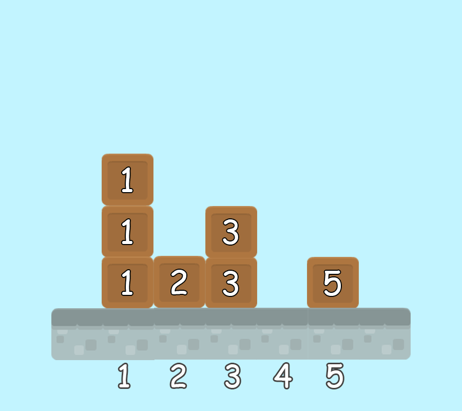

Description
Pak Dengklek has $N$ piles of blocks numbered from $1$ to $N$. The $i$-th
pile consists of $H_i$ blocks. Pak Dengklek wants to take these blocks.
First, Pak Dengklek walks to the pile that has the smallest number and contains at least one
blocks. Then, Pak Dengklek will follow this process:
- Suppose that Pak Dengklek is at the $x$-th pile. Take one block from the bottom of
that pile, then the blocks above will fall and $H_x$ is decreased by $1$.
- Pak Dengklek checks the $(x+1)$-th pile.
- If $(x+1) \le N$ and $H_{x+1} > 0$, then Pak Dengklek walks to the $(x+1)$-th pile.
Update the value of $x$ with $x+1$, and repeat step $1$ of the process.
- If $(x+1) > N$ or $H_{x+1} = 0$, then Pak Dengklek walks to the pile that has
the smallest number and still contains at least one block. Update the value of $x$
with that pile's number, and repeat step $1$ of the process. If all piles
do not contain blocks, the process is over.
Pak Dengklek has $Q$ questions numbered from $1$ to $Q$. For question $i$, Pak Dengklek
will give an integer $K_i$, which means that Pak Dengklek wants to know the pile number of the block
he takes at the $K_i$-th time. More specifically, the block he takes the first
time is the first block he takes. Help Pak Dengklek by answering those questions!
Input Format
The input is given with the following format:
N
H1 H2 ... HN
Q
K1
K2
.
.
.
KQ
Output Format
$Q$ lines: the $i$-th line consists of an integer that represents the pile number
of the block that Pak Dengklek takes the $K_i$-th time.
Sample Input 1
5
3 1 2 0 1
3
1
3
7
Sample Output 1
1
3
5
Explanation of Sample 1
This sample can be illustrated with the following animation. Pile numbers of
the block that Pak Dengklek takes in order are $1, 2, 3, 1, 1, 3, 5$.

Subtasks
For all subtasks:
- $1 \leq N \leq 2 \times 10^5$
- $0 \leq H_i \leq 10^9$, for $1 \leq i \leq N$
- $1 \leq Q \leq 2 \times 10^5$
- $1 \leq K_i \leq H_1 + H_2 + \dots + H_N$, for $1 \leq i \leq K$
Subtask 1 (4 points)
Contains only the following test case:
5
3 4 5 4 3
6
3
6
9
12
15
18
Subtask 2 (7 points)
Contains only the following test case:
15
8 4 8 2 8 4 8 1 8 4 8 2 8 4 8
7
1
2
4
8
16
32
64
Subtask 3 (6 points)
- $H_i = H_1$, for $2 \leq i \leq N$
Subtask 4 (10 points)
- $N \leq 10^3$
- $H_i \leq 10^3$, for $1 \leq i \leq N$
- $Q = 1$
Subtask 5 (8 points)
- $H_i \leq 5$, for $1 \leq i \leq N$
Subtask 6 (13 points)
- $H_i \leq H_j$, for $1 \leq i < j \leq N$
Subtask 7 (17 points)
Subtask 8 (15 points)
Subtask 9 (20 points)
- No additional constraints